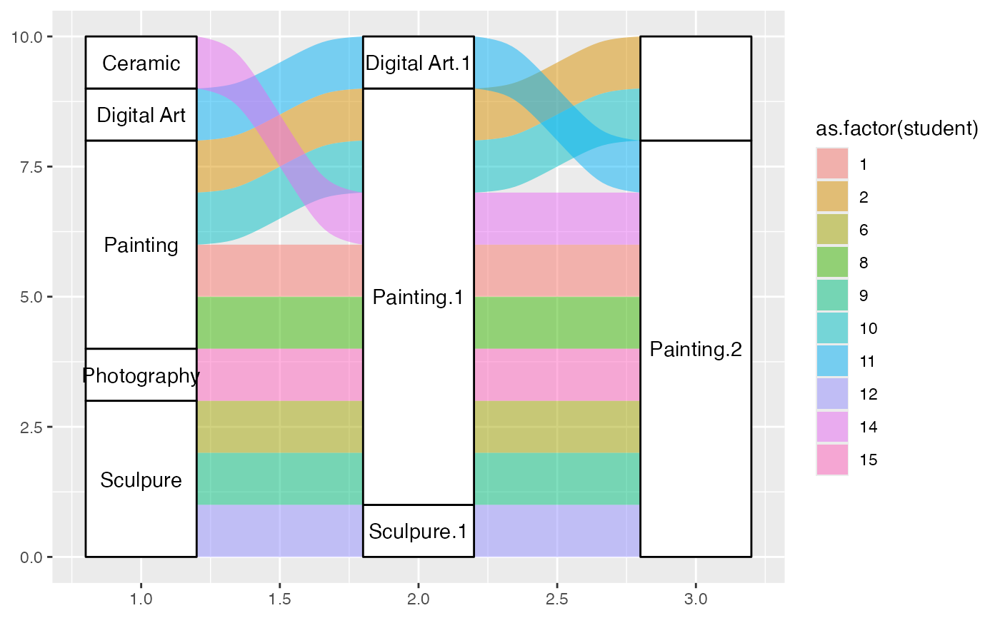
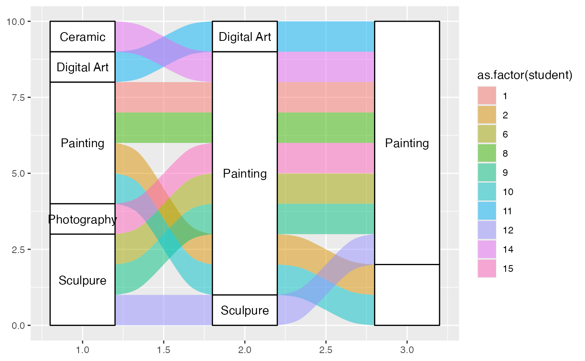
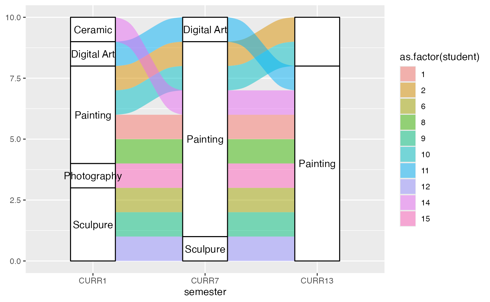

alluvial-data.RdAlluvial diagrams consist of multiple horizontally-distributed columns (axes) representing factor variables, vertical divisions (strata) of these axes representing these variables' values; and splines (alluvial flows) connecting vertical subdivisions (lodes) within strata of adjacent axes representing subsets or amounts of observations that take the corresponding values of the corresponding variables. This function checks a data frame for either of two types of alluvial structure:
is_lodes_form(data, key, value, id, weight = NULL, logical = TRUE, silent = FALSE) is_alluvia_form(data, ..., axes = NULL, weight = NULL, logical = TRUE, silent = FALSE) to_lodes_form(data, ..., axes = NULL, key = "x", value = "stratum", id = "alluvium", diffuse = FALSE, discern = FALSE) to_alluvia_form(data, key, value, id, distill = FALSE)
| data | A data frame. |
|---|---|
| key, value, id | In |
| weight | Optional field of |
| logical | Deprecated. Whether to return a logical value or a character string indicating the type of alluvial structure ("none", "lodes", or "alluvia"). |
| silent | Whether to print messages. |
| ... | Used in |
| axes | In |
| diffuse | Fields of |
| discern | Logical value indicating whether to suffix values of the
variables used as axes that appear at more than one variable in order to
distinguish their factor levels. This forces the levels of the combined
factor variable |
| distill | A logical value indicating whether to include variables, other
than those passed to |
One row per lode, wherein each row encodes a subset or amount of
observations having a specific profile of axis values, a key field
encodes the axis, a value field encodes the value within each axis, and a
id column identifies multiple lodes corresponding to the same subset or
amount of observations. is_lodes_form tests for this structure.
One row per alluvium, wherein each row encodes a subset or amount of
observations having a specific profile of axis values and a set axes of
fields encodes its values at each axis variable. is_alluvia_form tests
for this structure.
to_lodes_form takes a data frame with several designated variables to
be used as axes in an alluvial diagram, and reshapes the data frame so that
the axis variable names constitute a new factor variable and their values
comprise another. Other variables' values will be repeated, and a
row-grouping variable can be introduced. This function invokes
tidyr::gather().
to_alluvia_form takes a data frame with axis and axis value variables
to be used in an alluvial diagram, and reshape the data frame so that the
axes constitute separate variables whose values are given by the value
variable. This function invokes tidyr::spread().
Other alluvial data manipulation: self-adjoin
#> Class Sex Age Survived Freq #> 1 1st Male Child No 0 #> 2 2nd Male Child No 0 #> 3 3rd Male Child No 35 #> 4 Crew Male Child No 0 #> 5 1st Female Child No 0 #> 6 2nd Female Child No 0is_alluvia_form(titanic_alluvia, weight = "Freq")#> [1] TRUE# Titanic data in lodes format titanic_lodes <- to_lodes_form(titanic_alluvia, key = "x", value = "stratum", id = "alluvium", axes = 1:4) head(titanic_lodes)#> Freq alluvium x stratum #> 1 0 1 Class 1st #> 2 0 2 Class 2nd #> 3 35 3 Class 3rd #> 4 0 4 Class Crew #> 5 0 5 Class 1st #> 6 0 6 Class 2ndis_lodes_form(titanic_lodes, key = "x", value = "stratum", id = "alluvium", weight = "Freq")#> [1] TRUE# again in lodes format, this time diffusing the `Class` variable titanic_lodes2 <- to_lodes_form(titanic_alluvia, key = variable, value = value, id = passenger, 1:3, diffuse = Class) head(titanic_lodes2)#> passenger Class Survived Freq variable value #> 1 1 1st No 0 Class 1st #> 2 1 1st No 0 Sex Male #> 3 1 1st No 0 Age Child #> 4 2 2nd No 0 Class 2nd #> 5 2 2nd No 0 Sex Male #> 6 2 2nd No 0 Age Childis_lodes_form(titanic_lodes2, key = variable, value = value, id = passenger, weight = Freq)#> [1] TRUE#> student semester curriculum #> 1 1 CURR1 Painting #> 2 2 CURR1 Painting #> 3 6 CURR1 Sculpure #> 4 8 CURR1 Painting #> 5 9 CURR1 Sculpure #> 6 10 CURR1 Paintingis_lodes_form(majors, key = "semester", value = "curriculum", id = "student")#> [1] TRUE# curriculum data in alluvia format majors_alluvia <- to_alluvia_form(majors, key = "semester", value = "curriculum", id = "student") head(majors_alluvia)#> student CURR1 CURR3 CURR5 CURR7 CURR9 CURR11 CURR13 #> 1 1 Painting Painting Painting Painting Painting Painting Painting #> 2 2 Painting Painting Painting Painting Painting Painting <NA> #> 3 6 Sculpure Sculpure Painting Painting Painting Painting Painting #> 4 8 Painting Painting Painting Painting <NA> Painting Painting #> 5 9 Sculpure Art History Art History Painting Painting Painting Painting #> 6 10 Painting Painting Painting Painting Painting Painting <NA> #> CURR15 #> 1 Painting #> 2 <NA> #> 3 Painting #> 4 Painting #> 5 Painting #> 6 <NA>#>#> [1] TRUE# distill variables that vary within `id` values set.seed(1) majors$hypo_grade <- LETTERS[sample(5, size = nrow(majors), replace = TRUE)] majors_alluvia2 <- to_alluvia_form(majors, key = "semester", value = "curriculum", id = "student", distill = "most")#>head(majors_alluvia2)#> student hypo_grade CURR1 CURR3 CURR5 CURR7 CURR9 #> 1 1 B Painting Painting Painting Painting Painting #> 2 2 B Painting Painting Painting Painting Painting #> 3 6 C Sculpure Sculpure Painting Painting Painting #> 4 8 B Painting Painting Painting Painting <NA> #> 5 9 B Sculpure Art History Art History Painting Painting #> 6 10 B Painting Painting Painting Painting Painting #> CURR11 CURR13 CURR15 #> 1 Painting Painting Painting #> 2 Painting <NA> <NA> #> 3 Painting Painting Painting #> 4 Painting Painting Painting #> 5 Painting Painting Painting #> 6 Painting <NA> <NA># options to distinguish strata at different axes gg <- ggplot(majors_alluvia, aes(axis1 = CURR1, axis2 = CURR7, axis3 = CURR13)) gg + geom_alluvium(aes(fill = as.factor(student)), width = 2/5, discern = TRUE) + geom_stratum(width = 2/5, discern = TRUE) + geom_text(stat = "stratum", discern = TRUE, label.strata = TRUE)gg + geom_alluvium(aes(fill = as.factor(student)), width = 2/5, discern = FALSE) + geom_stratum(width = 2/5, discern = FALSE) + geom_text(stat = "stratum", discern = FALSE, label.strata = TRUE)# warning when inappropriate ggplot(majors[majors$semester %in% paste0("CURR", c(1, 7, 13)), ], aes(x = semester, stratum = curriculum, alluvium = student, label = curriculum)) + geom_alluvium(aes(fill = as.factor(student)), width = 2/5, discern = TRUE) + geom_stratum(width = 2/5, discern = TRUE) + geom_text(stat = "stratum", discern = TRUE)#> Warning: Data is already in lodes format, so `discern` will be ignored.#> Warning: Data is already in lodes format, so `discern` will be ignored.#> Warning: Data is already in lodes format, so `discern` will be ignored.#> Warning: Removed 1 rows containing missing values (geom_text).